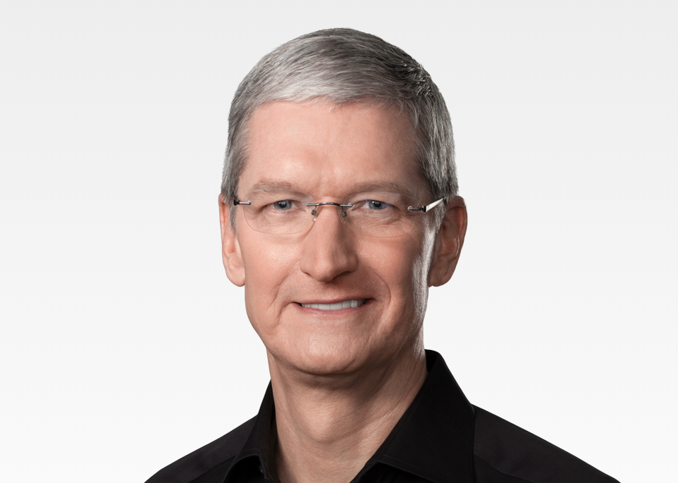

Tim Cook is the CEO of Apple and serves on its Board of Directors. Before being named CEO in August 2011, Tim was Apple’s Chief Operating Officer and was responsible for all of the company’s worldwide sales and operations, including end-to-end management of Apple’s supply chain, sales activities, and service and support in all markets and countries. He also headed Apple’s Macintosh division and played a key role in the continued development of strategic reseller and supplier relationships, ensuring flexibility in response to an increasingly demanding marketplace. Prior to joining Apple, Tim was vice president of Corporate Materials for Compaq and was responsible for procuring and managing all of Compaq’s product inventory. Previous to his work at Compaq, Tim was the chief operating officer of the Reseller Division at Intelligent Electronics. Tim also spent 12 years with IBM, most recently as director of North American Fulfillment where he led manufacturing and distribution functions for IBM’s Personal Computer Company in North and Latin America. Tim earned an MBA from Duke University, where he was a Fuqua Scholar, and a Bachelor of Science degree in Industrial Engineering from Auburn University.
